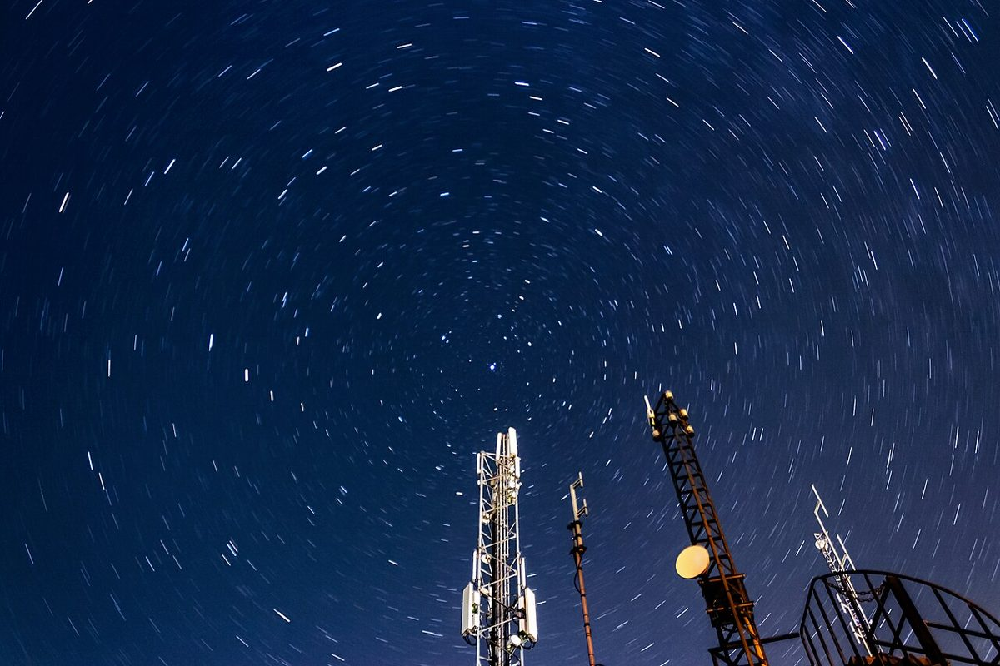
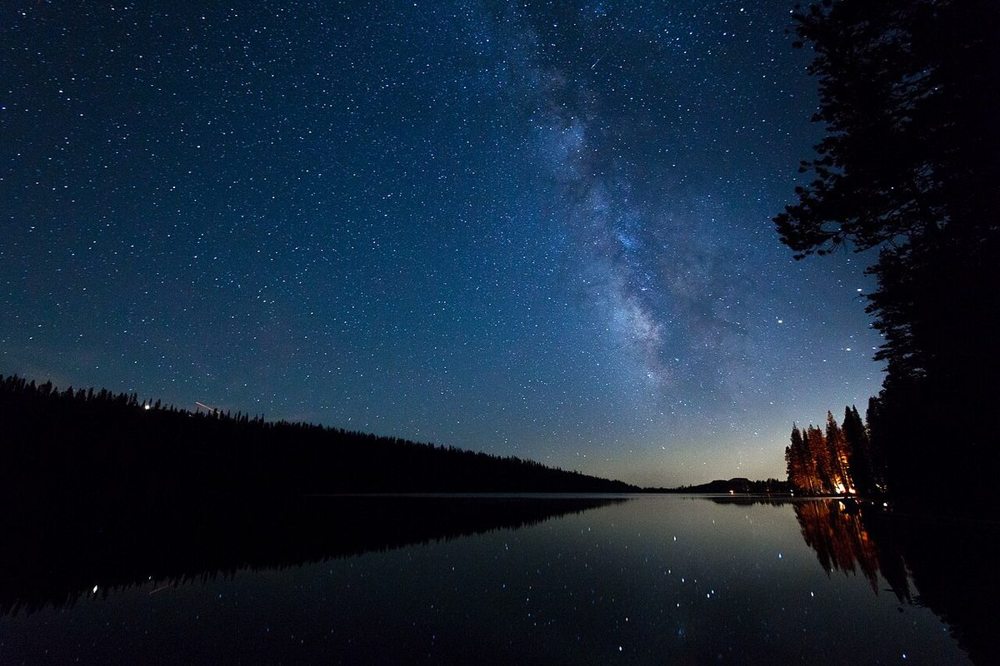
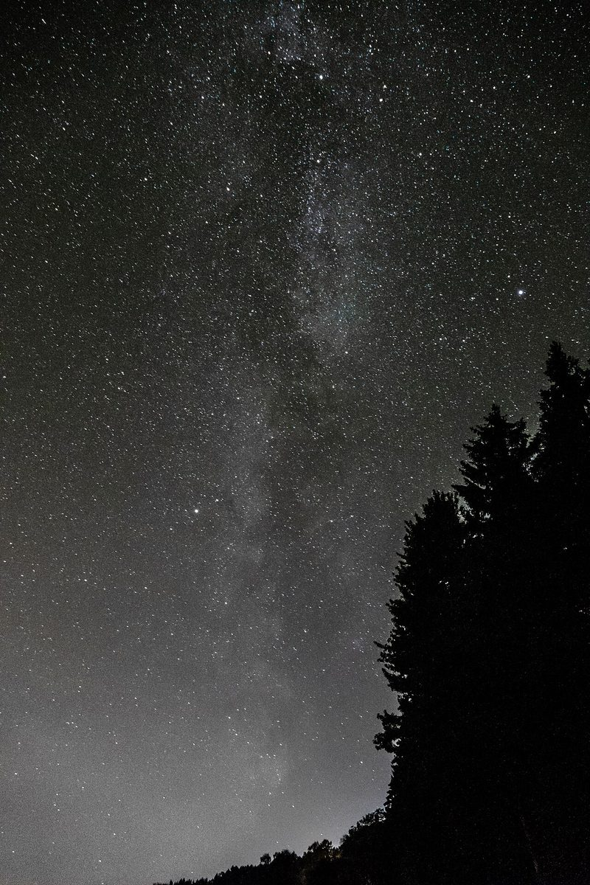

星の光の澄みわたり
制作側の連想
名前の九文字を、九つの星に。
店名の由来は分かりません。制作側は、店名が九文字であることに目を留め、一文字ずつを「一つ星」から「九つ星」までの星座に見立てて、このサイトを組み立てました。読みは制作側の想定です。制作側の連想で、お店の理念・由来とは無関係です。
九文字の星座づくり
一つ星から九つ星まで
- 1星ほし一つ星
- 2のの二つ星
- 3光ひかり三つ星
- 4のの四つ星
- 5澄すみ五つ星
- 6みみ六つ星
- 7わわ七つ星
- 8たた八つ星
- 9りり九つ星
点の数は文字の順番と同じです。星の配置に意味はなく、制作側の飾りです。
夜空のイメージ
四枚の空
写真は倉敷市の風景ではありません。国外・撮影地不明のフリー素材です。




ご案内
お店のこと(確認できたものだけ)
| 所在地 | 〒710-0046 岡山県倉敷市中央2丁目19-10 |
|---|---|
| 電話 | 090-9411-1121 |
| 営業時間 | 準備中 |
| 定休日 | 準備中 |
| ご予約 | 準備中 |
| 駐車場 | 準備中 |
| SNS | Instagram @hh_sumiwatari |